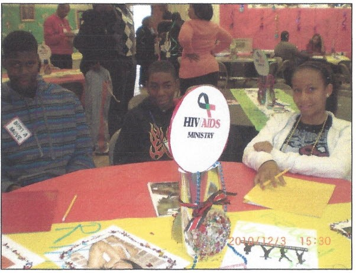

Partnering to Make a Difference!
Calvary Community Development Organization (CCDO) is an 501©(3) of San Bernardino, California. Since 1993, Calvary has been a positive presence in the Compton community and is now in San Bernardino, CA. Today, Calvary stands out as a beacon of hope in a community often plagued with hopelessness and despair. CCDO is a long-term vision of solutions to many of our community's struggles. By providing programs and services that of real felt needs and problems, CCDO can come along- side the children and families of our community. The heartbeat of CCDO is not only programs and services, but to be an example of love here on earth both in deeds and words: "If anyone has material possessions and sees his brother in need but has no pity on him, how can the love of God be in him!" I John 3:17-18. To meet the felt needs of our neighborhood we must give a variety of services. We have begun with the children, by providing a mentoring, leadership development ministry that start with an after-school program. Because we have experienced success in academic and behavior improve ments with the children over the last 20+ years, we have gained the attention of the parents. We now have a platform to reach out to minister to them and the community. Programs like job training, literacy, English classes, low-income housing, day-care, drug and alcohol treatment, health care and marriage and family counseling are all vital parts of our total ministry vision and goals.
The Power of Partnership The vision for inner city ministry can best be accomplished when suburban churches and ministries begin working together, cross- culturally, as one body in Christ. The goal for joining forces is to help meet the needs of the poor (Matthew 25:34-40), help and fulfill the God’s mandate of racial econciliation" Corinthians 5: 18-20) Would you prayerfully consider being a part of our Partnership Team, a group of people committed to bringing their time, talents, and treasures to the often forgotten population of San Bernardino!
Mental Health Development • Counseling Center Marriage & Family Therapy HIV/AIDS Counseling and Education Drug & Alcohol Parolees & Ex-Convicts Family Reunification (Foster) Educational Development • Say Yes Center-Life Skills Development Student Run Businesses • Adult Continuing Education Program ESLClasses Parenting Classes Financial Skills Classes Transition from Welfare Health Education and HIV/AIDS Ed. Job Prep Center • Urban Ministry Training Program Strategic Planning Timeframe Short-Term Goals (1-5 Years) • Increase Support Base • Build Relations with Surburban Churches • Full-time SAY Yes Director • CCDO/SAY Yes Fund Developer (f-t) • Thrift Store Building Acquisition • Computer Classes (3/mo.) • Develop Hispanic Ministry • Build Vision in Staff • Performing Arts Center
Calvary Community Development Organization P. O. Box 90176 San Bernardino, CA 92427 (310) 621-5387 E-mail: c.of@sbcglobal.net 501(c)3 Tax 10 # 95-4591015 